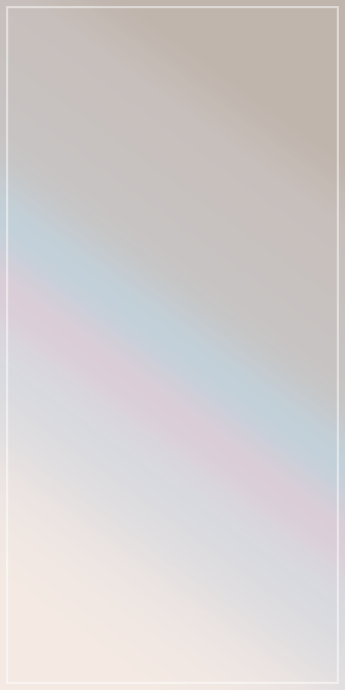

Site Name
すっきり白いテーマです。
テキストテキストテキストテキストテキストテキストテキストテキストテキストテキストテキストテキストテキスト
- 更新履歴１
- 更新履歴２
- 更新履歴３
見出し２
見出し３
見出し４
見出し５
見出し６
リンク リンク リンク
markで下線を引きます。
- リスト１
- リスト２
グリッド・画像
imgにclass="modal-window"を付けると、クリック時にモーダルウィンドウで表示します。
imgにclass="trim"を付けると、横いっぱい・縦最大300pxでトリミングして表示します。縦横比に差がある画像向け。
それ以外の場合、大きい画像は最大縦300pxで表示されます。
グリッド表示１。
div class="grid"の中身はグリッド表示（最大三列）になります。
グリッド表示２。
テキストテキストテキストテキストテキストテキストテキストテキストテキストテキストテキスト
グリッド表示３。
テキストテキストテキストテキストテキストテキストテキストテキストテキストテキスト


